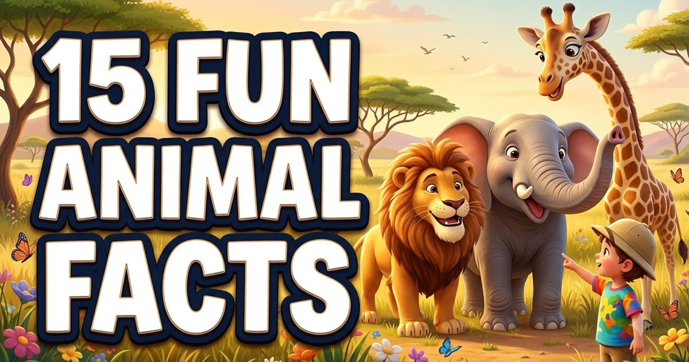

Fun Animal Facts for Kids

Lions that roar across miles, elephants with a nose that works like a hand, giraffes taller than a grown-up — animals are full of surprises. Here are 15 fun animal facts for kids ages 3 to 6, each one paired with a coloring idea from My First Animal Explorer, so your child can meet each animal on the page.
Animal facts for kids ages 3–6
Each fact below comes with a coloring idea, so your child can hear it, picture it and color it — read one fact, then color that animal together.
1. Big cats — lions, tigers, and cheetahs
Big cats are some of the first animals children learn to name, and they are full of surprises. Lions live in family groups, tigers wear stripes no other tiger shares, and cheetahs are the fastest mammal on land. Start here, with three of the most loved animals in My First Animal Explorer.
- A lion's roar can be heard up to five miles away. Lions live in groups called prides, and the roar helps the pride stay together. Color the lion a sandy yellow, then roar together — can your child roar as loud as a lion?
- No two tigers have the exact same stripes. A tiger's stripes are as special as your child's fingerprints. Color the tiger orange with black stripes, and ask your child to give their tiger its very own stripe pattern.
- The cheetah is the fastest mammal on land. It can reach 60 or even 70 miles an hour over short distances — about as fast as cars travel on a highway. Color the cheetah golden yellow with black spots, and draw speedy lines behind it.
2. Elephants — the gentle giants
African elephants are the largest mammals on land. A male can weigh up to 7.5 tons — as much as two big cars. But elephants are gentle, clever animals that live in close family herds.
- An elephant's trunk is its nose and its upper lip joined together. It has no bones at all, but about 150,000 bundles of muscle. It is strong enough to pick up a tree trunk — and gentle enough to pick up a single piece of straw. Color the elephant gray, and let your child trace the long, curvy trunk with a crayon.
- An elephant's big ears work like a radiator. When an elephant flaps its ears on a hot day, blood flows through the ears and cools down. Color the ears pink inside, like the soft skin of a real elephant's ear.
- Elephants spend about 16 hours a day eating, munching 165 to 330 pounds of plants. That is a lot of lunch! Color the elephant standing beside a tree, and draw the leaves it might eat next.
3. Giraffes — the tallest animals on land
A giraffe can stand 14 to 19 feet tall — taller than a grown-up standing on another grown-up's shoulders. Its long neck reaches leaves high in the trees that other animals cannot reach.
- A giraffe's tongue can grow to almost 21 inches long — longer than a school ruler — and it is dark purple, which helps protect it from sunburn while the giraffe eats leaves all day. Color the giraffe's tongue purple when you reach the mouth.
- No two giraffes have the same spots. Each giraffe's pattern is as special as a fingerprint. Let your child choose the spot colors — brown, orange, or even purple spots are all fine.
- A baby giraffe is about 6 feet tall when it is born — as tall as a grown-up! It grows about 4 feet in its first year. Color the baby giraffe next to its mom, and count how many spots you can find together.
4. Ocean animals — the blue whale and the octopus
The ocean is home to the biggest animal that has ever lived, and to animals with more hearts than we have. Both are favorites with young children — and fun to color, too.
- The blue whale is the largest animal known to have ever lived — bigger than any dinosaur. It can grow up to 100 feet long, almost as long as three school buses in a row. Color the whale blue, and draw wavy water all around it.
- An octopus has three hearts. Two hearts pump blood to its gills, and one heart pumps blood around its body. Its blood is blue, too! Color the octopus purple or pink, and count its eight arms together.
5. Birds — flamingos, owls, and penguins
Birds come in every color, and some of them do things that sound made up — until you learn they are true. A flamingo gets its pink from its food, an owl can look almost all the way behind itself, and a penguin dad keeps an egg warm on his feet.
- Flamingos are not born pink. Chicks hatch covered in gray or white down, and they turn pink from the food they eat — tiny algae and shrimp. Color the flamingo bright pink, and tell your child the pink comes from its lunch!
- An owl can turn its head about 270 degrees — three quarters of a full circle — to look behind itself. Its eyes cannot move, so its head does all the turning. Color the owl brown, and give it big round eyes.
- An emperor penguin dad balances the egg on his feet and covers it with a warm fold of skin for about 65 days, through snow and storms, while the mom swims away to find food. Color the penguin black and white, with a yellow patch on its neck.
6. Pandas — the bamboo eaters
Giant pandas look like cuddly toys, but they are real bears — and very picky eaters. Almost everything a panda eats is bamboo, and pandas spend 10 to 16 hours a day munching it.
- Bamboo does not give a panda much energy, so a panda has to eat for most of the day to get enough food. Color the panda black and white, and draw green bamboo sticks for it to munch.
7. Try these animal activities at home
- Read one fact out loud, then color that animal together in My First Animal Explorer. The book has 20 animals to color, with each animal's name to trace.
- Ask your child to tell you their favorite fact in their own words. Retelling a fact is great practice for talking and remembering.
- Play animal sounds: roar like a lion, trumpet like an elephant, and waddle like a penguin. Movement games like these can help young children remember what they learned.
- Keep it short and sweet — 10 to 20 minutes is plenty for most preschoolers — and let your child stop whenever they lose interest. Short, happy sessions are the ones children ask to repeat.
- Print a free animal page from our free printables and let your child color it while you read the matching fact aloud.
Every animal in this article is waiting to be colored in My First Animal Explorer. Pick a favorite, grab the crayons, and see where the next fact takes you. If your child loves animals, they may also enjoy our space facts for preschoolers — ten simple facts about the Sun, the Moon and the planets.
Try it yourself
Start with our free animal pages — no sign-up needed.
Frequently asked questions
What age is this article for?
These facts are written for children ages 3 to 6, with a parent reading along. Younger children will enjoy the pictures and the animal sounds, while older preschoolers can start to remember the facts and retell them.
Are these animal facts really true?
Yes. Every fact in this article comes from National Geographic Kids, the San Diego Zoo, the Smithsonian, or Johns Hopkins University. The sources are listed below, so you can read more with your child.
How can I use these facts while coloring?
Read one fact out loud, then color that animal together. Ten to 20 minutes is plenty for most preschoolers — and let your child stop whenever they lose interest. Short, happy sessions are the ones children ask to repeat.
Sources
- National Geographic Kids. Lion — a lion's roar can be heard up to five miles away; lions live in groups called prides.
- National Geographic Kids. Tiger — no two tigers have the exact same stripes.
- National Geographic Kids. Cheetah — the fastest mammal on land, reaching 60 or even 70 miles an hour over short distances.
- San Diego Zoo Wildlife Alliance. Elephant — African elephants are the largest mammals on land; the trunk has about 150,000 muscle bundles and no bones; ears flap to cool the body; elephants eat 165 to 330 pounds of plants a day.
- National Geographic Kids. Giraffe — giraffes stand 14 to 19 feet tall; a newborn is about 6 feet tall and grows about 4 feet in its first year.
- Bristol Zoo Project. 7 amazing facts about giraffes — each giraffe has a unique coat pattern; tongues can grow up to 53 cm long and are dark purple.
- Smithsonian Ocean. What is the Biggest Whale? — the blue whale is the largest animal known to have ever existed, reaching up to 100 feet.
- Smithsonian Ocean. Cephalopods: Octopus, Squid, Cuttlefish, and Nautilus — cephalopods have three hearts, and their blood is blue.
- Smithsonian's National Zoo and Conservation Biology Institute. American flamingo — a pigment in their food gives their feathers their pink color; chicks hatch covered with white down.
- Johns Hopkins University School of Medicine. Scientists explain how owl can rotate its head without cutting off blood — owls can rotate their heads by as much as 270 degrees in either direction.
- National Geographic Kids. Emperor Penguin — the father balances the egg on his feet and covers it with his brood pouch for about 65 days.
- Smithsonian's National Zoo and Conservation Biology Institute. Giant Panda FAQs — in the wild, giant pandas almost exclusively eat bamboo.
- Smithsonian's National Zoo and Conservation Biology Institute. A Day in the Life of a Giant Panda Keeper — giant pandas spend between 10 and 16 hours a day foraging and eating.